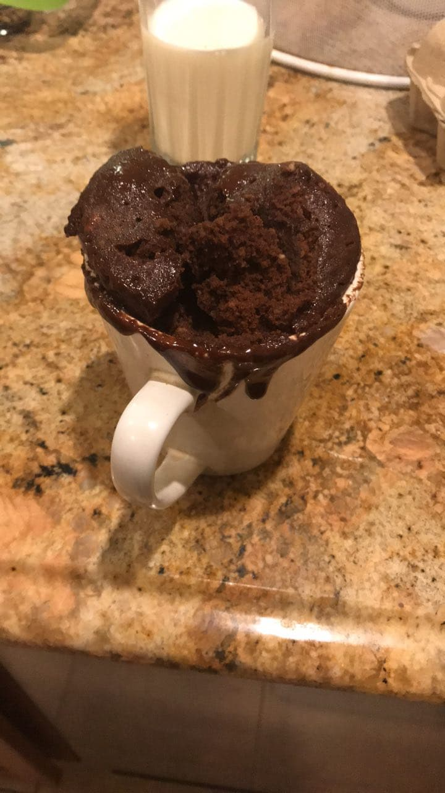

I was browsing the internet and I came across this wonderful recipe involving microwaved cupcakes in a mug. Seemed easy, but it turns out my incompetence in cooking is worse than I thought.
I had to work on a video with some classmates about nuclear decay. It was pretty terrible.
You can watch the whole thing here if you absolutely insist. I wouldn't recommend it.